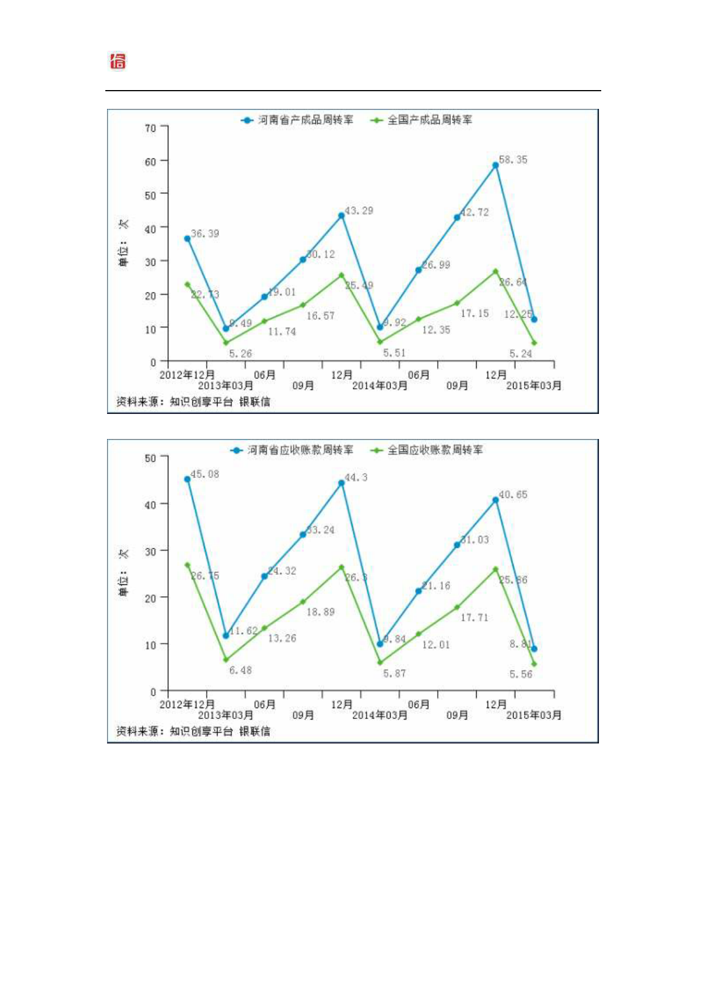

北京银联信投资顾问有限责任公司
河南省有色金属矿采选业发展研究报告（2015 年第 1
季度）
图表 12：河南省有色金属矿采选业产成品周转率
图表 13：河南省有色金属矿采选业应收账款周转率
（二）成长能力
截止 2015 年 03 月，河南省有色金属矿采选业销售收入同比增长 7.76%，高于
全国 8.73 个百分点；利润总额同比增长-5.10%，高于全国 17.80 个百分点；资产
总额同比增长 12.39%，高于全国 3.41 个百分点。
http：//www.unbank.info
11 服务电话：（010）63368810